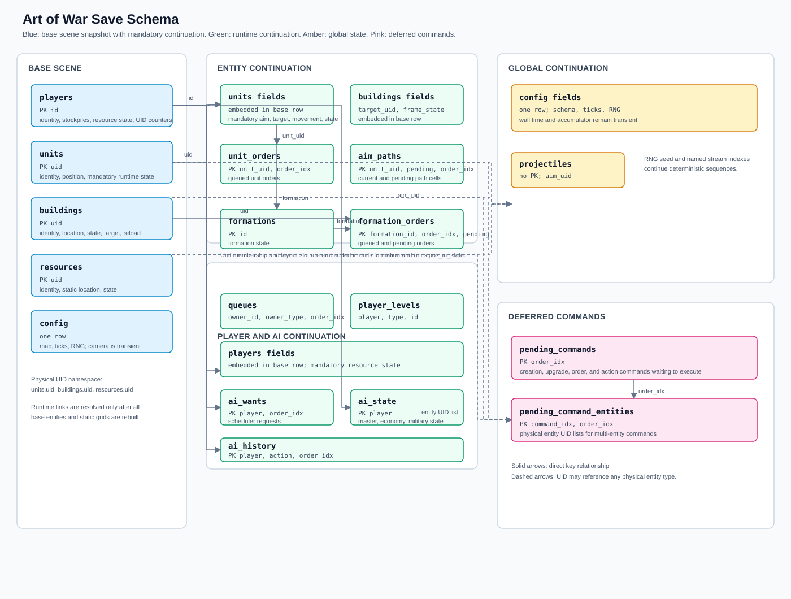

Scope And Entry Points
Scene saves are SQLite snapshots written to saves/<name>.db. SceneSaver writes the base scene and runtime continuation state; SceneLoader reads it into DTOs; Simulation and Main restore links only after the map, entities, grids, and managers exist.
game/src/scene/save/SceneSaver.cpp writes every table in one transaction; SQLConsts.h holds the table definitions; SaveTable.h maps table definitions to named column lists; db_columns.h has matching enums and count assertions; SceneLoader.cpp validates schemas and reads DTOs; Simulation.cpp restores runtime links; and Main.cpp initializes the camera, restores deferred commands, and restores frame state after normal startup reset work.
Snapshot Layout
A save has up to 17 tables: the five base scene tables plus 12 runtime-continuation tables. ai_state is created by every save. RNG continuation is stored in the one-row config record. GUI camera state, player display name/color, and last-period resource report values are intentionally omitted. Building deployment cells and queue capacity/nominal duration are derived while loading; queue amount and elapsed progress are retained. Empty optional runtime tables are omitted, so the actual table count can be lower. Mandatory per-unit continuation is stored directly in units, mutable per-player resource statistics are stored directly in players, building combat continuation is stored in buildings, and simulation scheduling is stored in config; derived resource capacities are rebuilt from loaded buildings.

Base Scene Tables
| Table | Primary key | Example row | Purpose |
|---|---|---|---|
units | uid | id_db=7, uid=1203, player=1, level=2, position_x=442, position_z=207, state=4 | Unit identity, saved HP, owner, level, position, current state, velocity, and mandatory continuation state: targets, pending state, frame state, formation fields, command data, charge data, and current/pending aim state. Acceleration is recalculated on the next simulation tick. Position and HP are precision-scaled integers. |
buildings | uid | id_db=3, uid=310, player=1, level=1, bucket_x=44, bucket_y=21, state=2 | Building identity, saved HP, owner, level, static-grid location, current and next state, combat target UID, and frame state. The deployment cell is selected again from the loaded map. |
resources | uid | id_db=2, uid=810, bucket_x=12, bucket_y=18, state=1 | Resource identity, saved HP, static-grid location, and state. |
players | id | id=1, nation=2, buildingUid=311, unitUid=1204, food=1000, wood=750, gather_food=3.5 | Player identity, team, nation, color, entity UID counters, current resource stockpiles, and mutable resource statistics. All persisted numeric values are precision-scaled integers and restored as floats in memory; building-derived capacities are rebuilt after entity loading. |
config | None; one row | total_ticks=1907, rdn_present=1 | Snapshot precision/map configuration and simulation tick count, plus RNG seed and stream indexes. Frame and seconds are derived from total_ticks; wall time, the render accumulator, and GUI camera state are transient and reset on load. |
uid is the common physical-entity key. It identifies rows in units, buildings, and resources; it is not a database definition ID. id_db refers to an immutable gameplay definition in Data/Database/data.db.
Unit And Building Continuation
| Table | Primary key | Example row | Relations and purpose |
|---|---|---|---|
units mandatory fields | uid | uid=1203, target_uid=2201, next_state=5, formation=3, aim_kind=1 | Every unit row contains its mandatory continuation state. Target UIDs can refer to any physical entity. The transient force result is not persisted. |
unit_orders | (unit_uid, order_idx) | unit_uid=1203, order_idx=0, action=2, append=0, has_target=1, target_uid=2201 | Zero or more queued orders for units.uid, restored in order_idx order. A target UID is optional when an order instead contains an x, z position. |
aim_paths | unit_uid | unit_uid=1203, path=442,443,444, pending_path=500,501 | One row per unit containing comma-separated grid-cell IDs for the current and pending aim paths. Empty strings represent empty paths. The current position inside each path remains in units.aim_current and units.pending_aim_current. |
buildings runtime fields | uid | uid=310, target_uid=1203, frame_state=18 | The normal buildings row also contains the active combat target UID and reload/frame state. The target remains a UID until the simulation restores cross-entity links. |
Player And AI Continuation
| Table | Primary key | Example row | Relations and purpose |
|---|---|---|---|
queues | (owner_id, owner_type, order_idx) | owner_id=310, owner_type=1, order_idx=0, type=2, id=7, elapsed_ticks=42 | Production and upgrade work. owner_type=0 joins owner_id to players.id; owner_type=1 joins it to buildings.uid. Rows retain queue order and elapsed work. |
player_levels | (player, type, id) | player=1, type=0, id=7, level=2 | Non-zero player-wide upgrades. player joins players.id; type=0 is a unit level and type=1 is a building level. |
players resource fields | id | player=1, gather_food=3.5, sum_food=190.0 | Mutable economy statistics embedded in the corresponding players row. Cumulative totals are retained for benchmark output; last-period food/gold report values are GUI-only and omitted. Food/gold storage and stone/gold refinement capacities are derived from loaded building levels. |
ai_state | player | player=1, prev_score=430, food_priority=0.8, pressure_our_army_enemy_army=-0.42 | Master delta/history values, cached economy priorities, all 21 fixed military-pressure values, and lacking feedback for a player. |
ai_wants | (player, order_idx) | player=1, order_idx=0, type=1, specific_id=7, age=4 | AI production scheduler items, including priority aging, soft reserves, counts, and active state. |
ai_history | (player, action, order_idx) | player=1, action=1, order_idx=2, tick=1890, type=4, result=1, chosen_id=7 | Ordered AI action and order history. action distinguishes the two history streams. |
World, Formation, And Deferred Command State
| Table | Primary key | Example row | Relations and purpose |
|---|---|---|---|
config runtime fields | one row | total_ticks=1907, rdn_seed=1827364, rdn_ai_idx=14 | The normal config row stores the simulation tick count and RNG seed and named stream indexes. Floating-point runtime values in every save table are stored as integers multiplied by config.precision; current_frame and seconds are derived from total_ticks using FRAMES_IN_PERIOD. Wall time, the render accumulator, and camera state are not saved and are reset on load. |
projectiles | none | aim_uid=2201, percent_to_go=0.45, speed=1.2, attack_val=8, player=1 | Active logical projectiles. Rows have no gameplay identity or ordering requirement; aim_uid references a physical entity. Graphical nodes and trajectories are recreated during load and are not persisted. |
formations | id | id=3, state=2, type=1, direction_x=0, direction_z=1 | Formation identity, state, type, and direction. |
formation_orders | (formation_id, order_idx, pending) | formation_id=3, order_idx=0, pending=0, action=2, has_target=1 | Queued and currently pending formation orders. |
units.formation | units.uid | uid=1203, formation=3, pos_in_state=0 | Formation membership and layout slot. Each unit belongs to at most one formation; the runtime rebuilds each formation's temporary unit vector from these unit fields. |
pending_commands | order_idx | order_idx=0, kind=2, action=1, target_uid=2201, formation_id=3, append=0 | Commands queued at save time but not yet executed: creation, upgrade, unit/group/formation orders, and building/resource/general actions. |
pending_command_entities | (command_idx, order_idx) | command_idx=0, order_idx=1, uid=1204 | Variable-length physical-entity list for pending_commands.order_idx, used by multi-entity commands. |
| GUI camera | none | not saved | Camera mode and target are presentation state. Loading uses the normal camera setup centered on the active player's buildings. |
Relation Rules
| Reference | Target | Meaning |
|---|---|---|
player | players.id | Player-owned state, upgrades, AI values, history, and player queues. |
uid, unit_uid | units.uid | Unit continuation, orders, and paths. |
Building queue owner_id | buildings.uid when owner_type=1 | Building production or upgrade queue. |
target_uid, pending_target_uid, aim_target_uid, pending_aim_target_uid, aim_uid | Any units.uid, buildings.uid, or resources.uid | Physical target links. A value of 0 means no target. |
formation, formation_id | formations.id | Unit or pending-command formation reference. A negative formation ID means no formation. Unit membership is stored only in units.formation. |
command_idx | pending_commands.order_idx | Entity list belonging to a deferred command. |
The schema intentionally has no SQLite foreign-key constraints. Links are UID references because target entities can be different physical types, and unit interaction state needs all base entities and static grids to exist before it is connected.
Save And Load Sequence
SceneSaver::createSave() opens saves/<name>.db, writes all tables inside one transaction, commits, and then runs VACUUM. The core scene tables are written first, then runtime tables are created and populated through createTable(), named-column INSERTs generated from saveColumns(), and enum-indexed bindings. Floating-point runtime values are converted to precision-scaled integers at the save boundary. A write or commit failure rolls back and returns false; a post-commit VACUUM failure is only a warning. The saver does not replace an existing save file.
SceneLoader::createLoad() opens the filename supplied by the caller below saves/, loads config, embedded frame/RNG state, and runtime DTO data while the database is open. The load UI supplies filenames ending in .db; the saver appends .db to the user-entered save name. See Load System Development for the short loading and UID-resolution reference. The later initialization sequence is:
- Load player, unit, building, and resource base rows.
- Build entities and static grids.
- Build a UID-to-physical-object lookup.
- Restore formations and formation orders, unit links and aims, building targets, levels, queues, AI scheduler/resource state, RNG state, and projectiles.
- Use the normal camera setup, then restore pending commands and frame state after startup paths have reset their defaults.
Do not resolve target_uid or queued-command entity UID directly in SceneLoader. The referenced entity may not exist until the base-entity construction step completes. Formation membership is reconstructed from the saved unit rows after base entities exist.
Compatibility And Change Rules
Variable-length runtime tables are restored independently when they exist. The loader requires the five base tables and every current column in their required schemas, but it accepts extra columns and does not depend on SQLite physical column order. aim_paths is written in the current flat one-row-per-unit format; the loader also recognizes the previous per-cell (unit_uid, pending, order_idx, cell) layout and rebuilds both vectors. The checked-in quicksave.db and quicksave512.db files now use the current five-table schema; intermediate copies can be upgraded with docs/quicksave-migration.txt. Genuinely older five-table saves missing current required columns still need docs/old-save-migration.txt. Saves from the immediately previous pre-consolidation format, with a four-column config plus random and camera singleton tables, can be upgraded with docs/config-table-migration.txt. The save format is work in progress and currently has no active schema-version field, so compatibility is determined by the required table and column contract rather than by a version number.
Save tables have a C++ positional binding contract, not a SQLite physical-order contract. Enum order determines named insert binding positions and explicit select result positions, while enum names must match the SQL column names. Persisted floating-point values use integer columns and are scaled by config.precision; the loader still accepts legacy REAL cells as already-unscaled values. Every schema change must update these together:
- The table definition and name in
SQLConsts.h. - The matching column enum in
db_columns.h. - Save bindings in
SceneSaver.cpp. - Load DTO bindings in
SceneLoader.cpp. - Count assertions and focused save/load tests.
AimSaveKind, PendingCommandKind, or the state/action/queue enums written to this database. The save format has no active schema-version field; add an explicit migration or regenerate existing saves when a required contract changes.Validation Checklist
- Create a new GUI save and verify the five base tables plus every non-empty optional runtime table exist; global RNG state is in
config, camera state is not saved, and empty optional tables are not created. - Verify every changed table's required column names and generated
SELECT/INSERTlists against its enum indb_columns.h; physical SQLite order may differ. - Use a save generated with the current schema, migrate an intermediate checked-in quicksave with
quicksave-migration.txt, or migrate a genuinely legacy five-table save withold-save-migration.txt. - Save and load a scene with a unit target and path, player and building queues, upgrades, a formation, a projectile, a pending command, and non-default AI state.
- Run
tests.exe --gtest_filter=PersistenceRowTest.*:PersistenceStateTest.*and a game smoke save/load run from the game working directory.